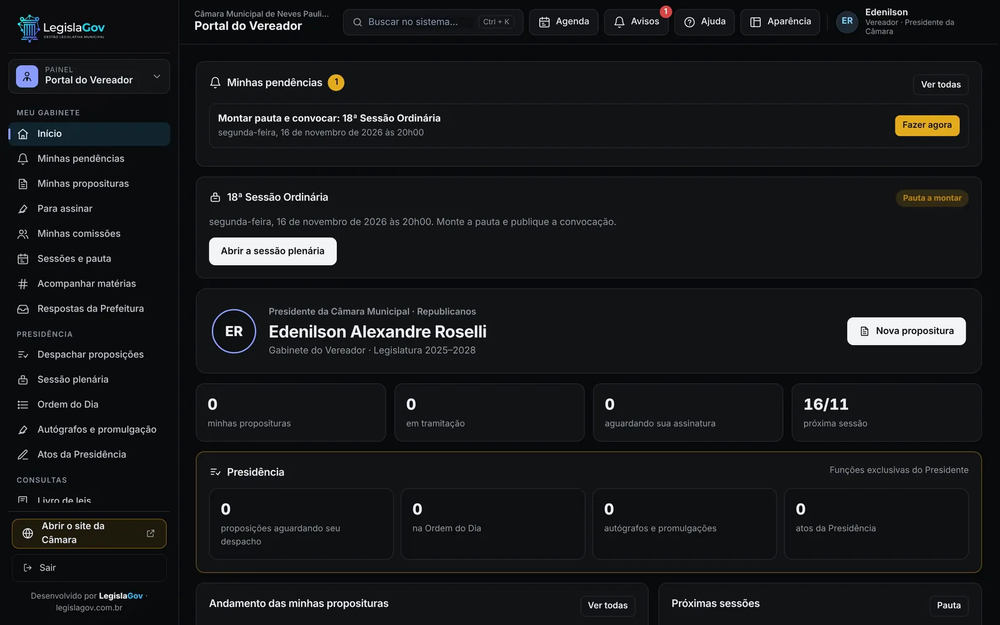
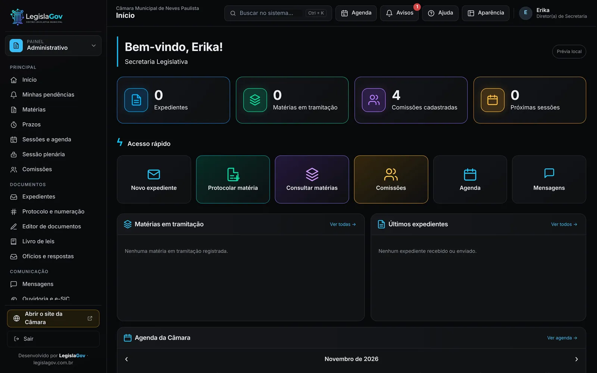
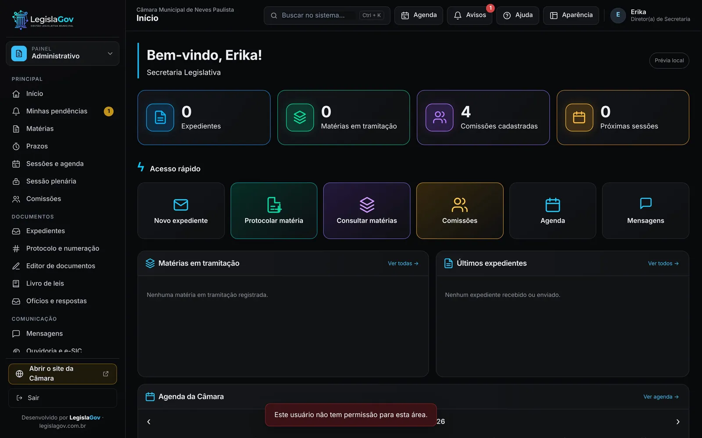
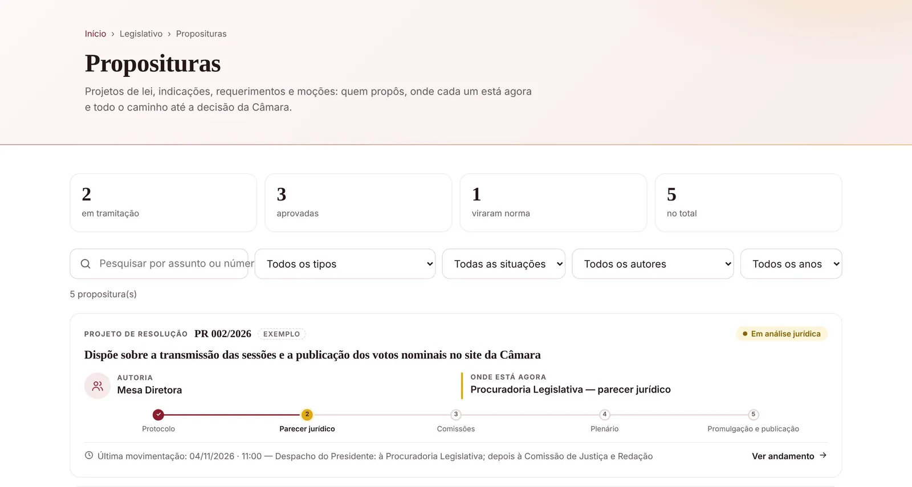
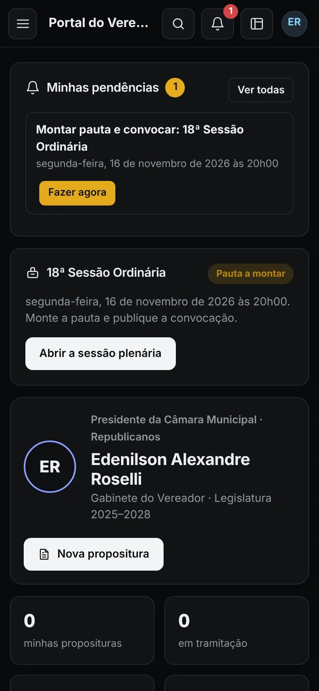

100% online, nada para instalar
Funciona no navegador. Atualizações chegam sozinhas, sem técnico na Câmara e sem servidor próprio.
Do protocolo ao telão do plenário: processo legislativo, sessão com voto nominal, assinatura digital, Portal do Vereador, Transparência e o site da Câmara, tudo ligado. Abre no navegador e no celular, sem instalar nada.
Em uso na Câmara Municipal de Neves Paulista (SP).
Altera o quadro de cargos efetivos da Guarda Municipal. Quórum: maioria simples.
Trabalhamos mais de dez anos dentro do setor público. O sistema segue o caminho real de uma matéria na Câmara, com as palavras que o servidor já usa.
Funciona no navegador. Atualizações chegam sozinhas, sem técnico na Câmara e sem servidor próprio.
O vereador assina, vota e acompanha suas matérias pelo celular, de onde estiver.
Secretaria, Procuradoria, Tesouraria, vereadores e Presidência entram direto nas suas tarefas, com prazos e avisos.
Documentos assinados com gov.br ou certificado ICP-Brasil, conferidos pelo próprio sistema.
Trazemos proposituras, leis e notícias do sistema anterior. A Câmara não começa do zero.
Implantação acompanhada, treinamento no próprio sistema e atendimento direto com os sócios.
Escolha uma parte para ver.






O que é feito dentro do sistema aparece no site sem ninguém digitar duas vezes.
Para dentro da Câmara
Para o cidadão
| Tarefa | Como costuma ser | Com a LegislaGov |
|---|---|---|
| Protocolar um projeto | Papel, livro de protocolo e número anotado à mão. | Número gerado na hora, já com o caminho até o plenário. |
| Montar a sessão | Pauta em editor de texto, convocação por mensagem avulsa. | Pauta com as matérias prontas, convocação publicada e enviada. |
| Votação | Contagem de mãos e ata digitada depois. | Voto nominal no celular, telão e ata prontos ao fim da sessão. |
| Saber onde está uma matéria | Ligar para a Secretaria ou procurar em pastas. | Cidadão e vereador veem a etapa atual no site. |
| Portal da Transparência | Vários sistemas e publicação atrasada. | Publicação em poucos cliques, na seção que o PNTP exige. |
| Trocar de sistema | Perder o histórico ou redigitar tudo. | Proposituras, leis e notícias trazidas do sistema anterior. |
Na Câmara de Neves Paulista, o sistema já chegou com o histórico do sistema anterior e do site antigo.
Números da importação feita em novembro de 2026.
Entendemos a rotina da Câmara, o Regimento e quem faz o quê.
Cargos, vereadores, comissões, prazos e modelos de documento.
Trazemos o histórico do sistema e do site anteriores.
Cada cargo aprende no próprio sistema, com atendimento direto.
Cada câmara tem seus dados separados, guardados no Brasil e com cópia todos os dias.

Site novo, Portal da Transparência, processo legislativo, sessão plenária e Portal do Vereador no mesmo sistema. O histórico do sistema anterior e do site antigo foi trazido para dentro do novo.
A LegislaGov nasceu de quem trabalhou por anos dentro de prefeituras e viu de perto sistemas que não entendem como o trabalho acontece. Nosso objetivo é facilitar a vida de quem usa o sistema todo dia.
Responsável pela tecnologia, pelo design e pelo desenvolvimento dos sistemas. Mais de dez anos de experiência em prefeituras.
Advogado com experiência no setor público. Garante que cada sistema siga a legislação e a realidade administrativa dos órgãos.
Não. O sistema funciona no navegador do computador e do celular. Não é preciso comprar servidor nem contratar técnico.
Sim. A Câmara pode contratar só o sistema interno, só o site e a Transparência, ou tudo junto. Quem já tem site pode manter o endereço atual.
Continua. Basta apontar o domínio da Câmara para o nosso servidor. Enquanto isso, a Câmara usa um endereço provisório.
Trazemos proposituras, leis, notícias e documentos que estiverem disponíveis no sistema e no site anteriores.
Sim. O sistema aceita assinatura gov.br e certificado ICP-Brasil, como prevê a Lei 14.063/2020, e confere o documento assinado.
Só quem tem cadastro liberado pelo administrador, e cada cargo vê o que é seu. No site aparece apenas o que é público.
Uma demonstração ao vivo, com a rotina da sua Câmara. Sem compromisso.